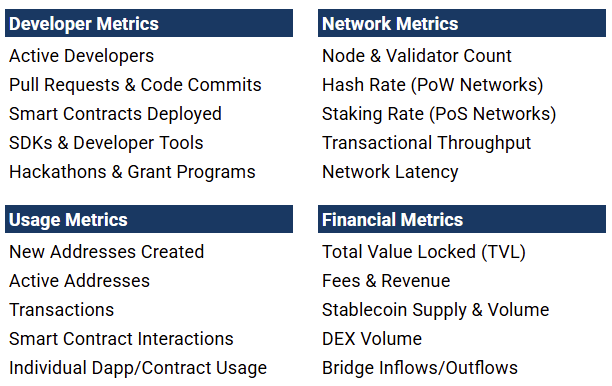
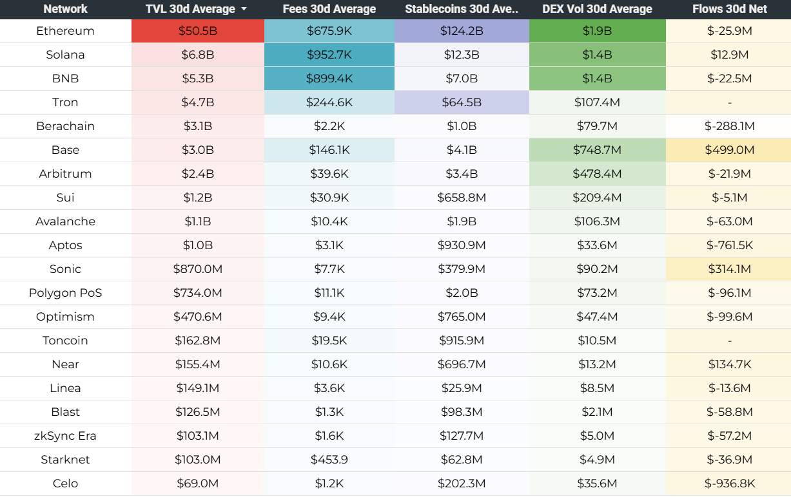
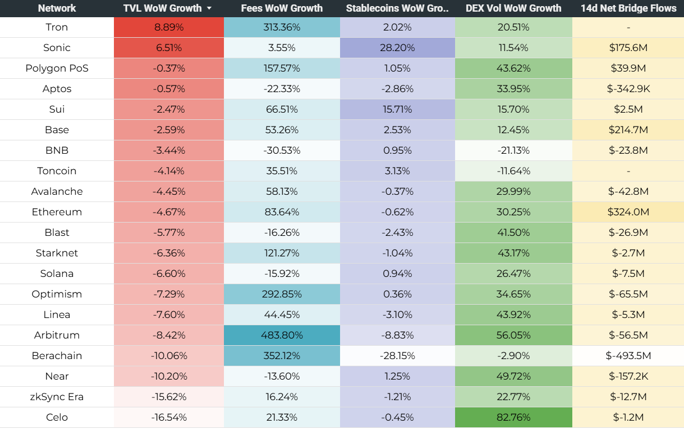
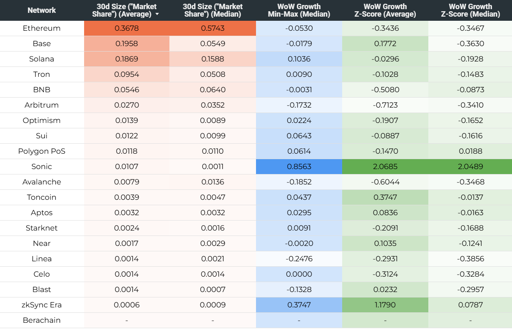
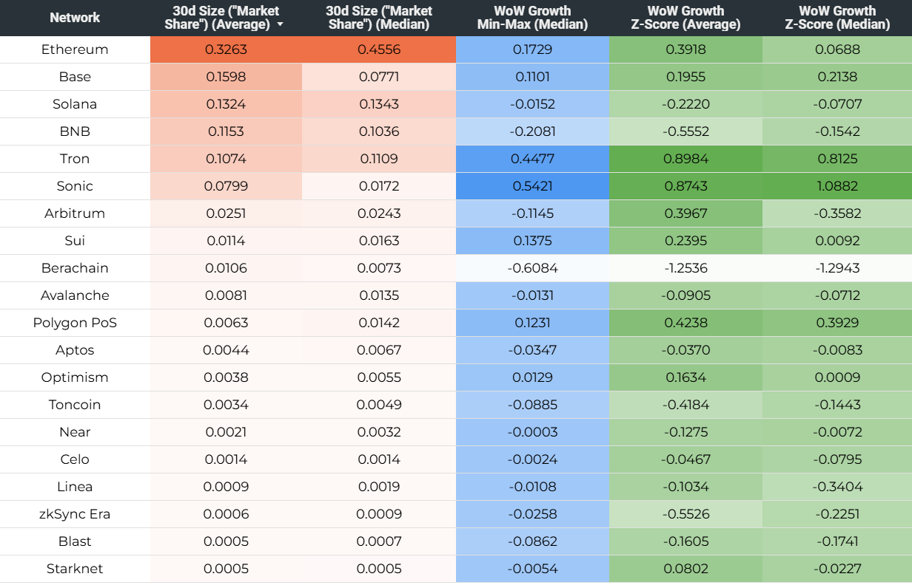
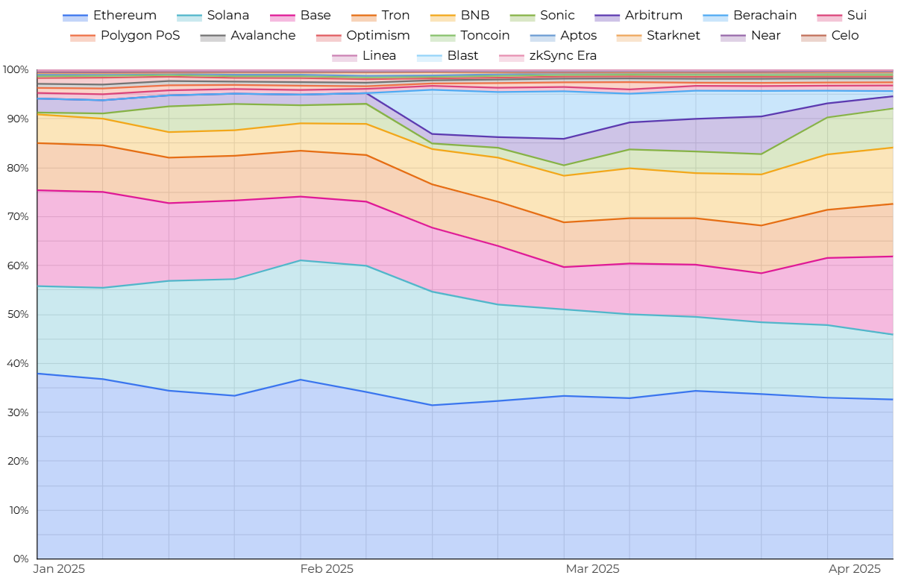

One of the key advantages of blockchain networks over other digital platforms is that data about assets and transactions hosted on a blockchain is publicly available. This allows for close to real-time tracking of how different networks compare across a variety of metrics. The most reliable method for assessing the usage of a particular blockchain is to zoom in on individual measures, ideally at the level of specific applications or user groups. However, that’s not always feasible. As the number of networks and the amount of data grows, various forms of aggregation are required to simplify the tracking process without losing the ability to identify when and where a closer look at the underlying data is warranted. This post provides an overview of one such attempt at metrics aggregation.
Broadly speaking, blockchain (and, more specifically, smart contract) networks can be compared across four types of data: developer metrics, network metrics, usage metrics, and financial metrics. Table 1 below provides examples from each of the four categories. The list is not exhaustive, highlighting the growing need to track multiple metrics simultaneously.

One of the ways in which comparing blockchains can be made more efficient is by combining multiple data points, for example through ratios or composite (index) measures. As an example of how such combined measures can be constructed, let’s focus on some of the most popular $-denominated financial metrics for tracking smart contract networks: Total Value Locked (TVL; sometimes also referred to as Total Value Secured), Fees, Stablecoin Market Cap, DEX Volume, and Net Bridge Flows (i.e., the difference between asset inflows and outflows through cross-blockchain bridges). But first, an important disclaimer:
Any combined metric is, by definition, an abstraction and should only be utilized with full understanding of its purpose and limitations. In this particular case, the purpose of collapsing multiple measures into one is not to replace tracking the individual metrics altogether but merely to simplify detecting major changes in the “economic pulse” and market share of a network compared to its peers without constantly having to look at the underlying data. The specific limitations of the proposed methodology are discussed in more detail in the final section below.
Methodology and results
Given that all of the metrics in question (TVL, Fees, Stablecoin Market Cap, DEX Volume, Bridge Flows) can be quite volatile on a daily basis, it is reasonable to compare them over an extended period of time, taking into account both absolute values and growth rates. The length of the time period should be chosen depending on whether the goal is to assess longer-term trends or compare networks on a shorter time frame. In this example, the focus is on the latter. Table 2 below presents 30d averages for the first four metrics and 30d net flows for the fifth metric; Table 3 below presents week-on-week (WoW) growth rates (using 7d averages) for the first four metrics and 14d net flows for the fifth metric (see footnote [1] for the rationale behind not using the WoW growth rate for the latter). All underlying data is daily and sourced from Artemis or DeFiLlama as of 2025-04-07 (see footnote [2] for important caveats regarding source data).


As mentioned above, in this particular case, the purpose of collapsing multiple metrics into one is to arrive at a proxy for how different networks compare across all included metrics in a way that would allow identifying major short-term (30d, WoW) shifts in the underlying data without having to look at the data itself. To achieve this, the individual data points must be aggregated and transformed in a way that allows for a quick and easy interpretation.
Table 4 and Table 5 below present three sets of combined scores as of 2025-01-13 and 2025-04-07, respectively. Scores on two separate dates are presented to demonstrate how 30d Size ranking (which can roughly be interpreted as "market share") is relatively stable, whereas WoW Growth scores can fluctuate considerably due to short-term volatility in the underlying metrics (see footnote [3] for examples of what can cause such WoW volatility in growth rates). The scores are calculated as follows:
30d Size (Average; Median): first, for each of the first four metrics (TVL, Fees, Stablecoin Market Cap, DEX Volume), a 30d average is calculated and normalized as a share in the sum of 30d averages of all networks; second, for the fifth metric (Net Bridge Flows), 30d net flows is calculated and positive values are normalized as a share in the sum of all positive flows while each negative value is assigned a score of 0; third, both the average and the median of the five resulting scores is calculated for each network and the results are normalized from 0 to 1. (See footnote [4] for the rationale behind assigning all negative 30d Net Bridge Flows a score of 0 and using both the average and the median for calculating the combined 30d Size score.)
WoW Growth Min-Max (Median): first, for each of the first four metrics (TVL, Fees, Stablecoin Market Cap, DEX Volume), WoW growth rates are calculated using 7d averages; second, for the fifth metric (Net Bridge Flows), 14d net flows are calculated; third, each of the five resulting series is min-max normalized from -1 to 1 (i.e., all negative values are assigned a negative score and all positive values are assigned a positive score with the lowest and highest values scored at -1 and 1, respectively), resulting in five scores per network; third, the median of the five scores is calculated for each network. (See footnote [5] for the rationale behind min-max normalization and using only the median for the combined WoW Growth Min-Max score.)
WoW Growth Z-Score (Average; Median): first, Z-Scores are calculated for each of the four WoW growth rates and 14d net flows, resulting in five Z-Scores per network (i.e., each value is scored based on how many standard deviations it differs from the mean of the dataset, defined as 0); second, both the average and the median of the five scores is calculated for each network. (See footnote [6] for the rationale behind using both the average and the median for aggregating Z-Scores.)


Interpreting the scores
Given that 30d Size scores are based on each network’s share in the sum of 30d averages of each of the five metrics (see footnote [4] on how the calculation differs slightly in the case of Net Bridge Flows), the combined 30d Size (Average) score can be interpreted roughly as the network’s average “market share” across all five metrics. A 30d Size (Average) score of 1 would mean that, among the networks included in the analysis, the network’s share of the total was 100% under each metric; conversely, a 30d Size (Average) score of 0 would mean that the network’s share of the total was 0% under each metric.
In terms of the first four metrics (TVL, Fees, Stablecoin Market Cap, DEX Volume), the same 3-5 networks consistently account for over 90% of the total market: Ethereum, Solana, Base, BNB, and Tron. However, each network’s performance in terms of Net Bridge Flows tends to fluctuate considerably on a weekly basis with major networks regularly experiencing large net outflows. The combined 30d Size (Average) score is therefore sensitive to which networks are attracting most inflows at any given time. For example, in Q1 2025, Ethereum’s dominance in terms of TVL and Stablecoin Market Cap (more than 50% of the total in both cases) was regularly balanced out by its weaker performance in terms of Fees and especially Net Bridge Flows (more often than not, Ethereum experienced net outflows, dragging down its combined 30d Size score). Meanwhile, thanks to liquidity incentives or general excitement around newly emerging ecosystems, networks with relatively low TVL and stablecoin market cap often experience large initial spikes in Net Bridge Flows, disproportionately boosting their 30d Size scores (in Q1 2025, this was the case with Berachain and Sonic, for example).
Another important factor to keep in mind when comparing 30d Size scores is the price of each network’s token. While token prices are not directly involved in calculating the scores, most of the underlying metrics are highly sensitive to price changes. This is because, on each network, the native token tends to be the primary collateral and trading asset, the price of which therefore affects the $-denominated values of TVL, Fees, etc. The impact of this on 30d Size ranking is often dampened by the strong correlation between most cryptoasset prices. However, if a particular token is significantly out- or underperforming others, this will disproportionately impact the network’s 30d Size scores. Whether that effect is considered desirable or not depends on one’s view on the relation between relative price performance and the network’s economic health compared to its peers. In practice, the two may or may not be connected, depending on the circumstances. However, it is generally agreed that consistent underperformance has a negative effect on the network’s ability to attract new capital and users, while consistent outperformance can be seen as a sign of economic strength.
By taking weekly snapshots of the combined 30d Size scores, it is possible to track how each network’s average “market share” across all five metrics changes over time. Chart 1 below shows weekly 30d Size (Average) scores for major L1s and L2s since the beginning of 2025. For a high-level comparison, the combined average is preferred to the median because it is more sensitive to outliers (and thus captures the network’s relative performance across all five metrics), while the median is mostly a helpful complement for highlighting cases where the effect of such outliers is particularly strong. In Q1 2025, the average market share of the top 3 networks (Ethereum, Solana, Base) has declined somewhat, which is partly explained by the overall decline in market activity in the second half of the quarter (especially on Solana), partly by networks like BNB growing their relative market share, and partly by the more recently launched Sonic and Berachain showing strong early traction (even though the latter saw its metrics decline considerably at the end of the quarter).

Two separate methods are used for aggregating growth metrics. The primary purpose behind the first – min-max normalized WoW Growth scores (the middle column in Table 4 and Table 5 above) – is to quickly identify networks that have either negative or positive WoW growth rates across most of the metrics (see footnote [1] on how the calculation differs slightly in the case of Net Bridge Flows). A WoW Growth Min-Max (Median) score of 1 would mean that the network performed best across the majority of the five metrics; conversely, a WoW Growth Min-Max score of -1 would mean that the network performed worst across the majority of the five metrics. A positive score indicates that most of the underlying values are positive, and economic activity on the network can thus roughly be described as expansionary week-on-week. A negative score indicates that most of the underlying values are negative, and economic activity on the network can thus roughly be described as contractionary week-on-week. Although the sign of the aggregated min-max score makes it easy to recognize the overall direction of growth, and each score’s proximity to the two extremes (-1, 1) makes it easy to identify significant out- or underperformance, the combined min-max scores do a poor job reflecting the distribution and variance of the underlying data. For that, aggregating Z-Scores is a more appropriate method.
The final two columns in Table 4 and Table 5 above present aggregated WoW Z-Scores. Similarly to 30d Size, the combined average can be used to measure relative performance of each network across all five metrics, while the median helps highlight the presence of extreme outliers among the underlying Z-Scores. A WoW Growth Z-Score (Average) close to 0 would mean that, on average, the network’s WoW growth rates (or 14d flows in the case of Net Bridge Flows) are close to the mean of the underlying dataset. The further the score is from 0, the bigger the network’s average out- or underperformance relative to the mean. Typically, an average Z-Score above 1 or below -1 is sufficient to rank a network among the top or bottom WoW performers, respectively. In Q1 2025, scores above 1.5 or below -1.5 have been rare and can thus be categorized as indicating significant WoW out- or underperformance. It is also common for a single Z-Score (most often 14d Net Bridge Flows) to have a disproportionate effect on the combined average. In other words, if a network registers a particularly large WoW change in any of the underlying metrics, this gets reflected in the combined WoW Growth Z-Score (Average).
Limitations and future work
The methodology and results presented above have some major limitations and caveats. Most importantly, to reiterate: any combined measure is by definition a more abstract and thus less accurate representation of the underlying data. While combined metrics can certainly be informative and, in this case, simplify drawing quick high-level comparisons between different networks, they should not be relied on as a complete replacement for tracking individual metrics. Additionally, here are some more specific limitations of the above methodology and potential ways of improving it:
In calculating the combined scores, each of the five metrics (TVL, Fees, Stablecoin Market Cap, DEX Volume, Net Bridge Flows) have been equally weighted. However, it could be argued that some metrics are more important than others in determining a network’s long-term economic strength and sustainability. If that’s the case, higher weights could be assigned to these metrics.
Combined growth scores are based on week-on-week growth rates and 14d bridge flows. As a result, these scores can be quite volatile due to base effects or significant short-term moves in the underlying metrics (especially Fees and DEX Volume) or token prices. The growth scores presented above provide a meaningful comparison relative to each network’s performance in the week prior, but they contain no information about longer-term trends. For example, a sudden but short-lived WoW decrease in just a couple of the underlying metrics could lead to an otherwise vibrant and growing network to temporarily register a low average Z-Score and vice versa. In such cases, it is fair to say that the network did indeed under- or outperform its peers on a relative WoW basis. However, very little can be gleaned from a single weekly score about the network’s long-term health and prospects. For that, combined WoW scores should be compared over many weeks, or the underlying growth scores should be calculated over longer time periods.
Both 30d Size (“market share”) and WoW Growth scores are calculated relative only to the networks included in the analysis, which were chosen based on how well they were covered by the source data providers. By definition, aggregated scores would be different if additional networks were added; for example, 30d Size scores would get reduced across the board in proportion to the “market share” of the newly added network(s). Ideally, the analysis should include all notable smart contract networks so that the aggregated scores capture as much of the total smart contract platform market as possible.
The five metrics included in the analysis were chosen due to their popularity and to maximize the number of networks covered. However, other metrics could be added, especially ones that are uncorrelated with the current selection. Potentially additive $-denominated metrics include stablecoin transfer volume, out-of-protocol tips to validators, and inflationary token rewards. Conversely, by comparing changes in combined scores to changes in the underlying metrics, as well as how both relate to token prices and market capitalization over time (which, in the long run, should have at least some relation to each network’s competitiveness), it can be tested whether there are perhaps only a few metrics that, if appropriately weighted and combined, provide an accurate enough measure for comparing the overall economic health of different networks.
The combined 30d Size and WoW Growth scores presented above are meant mostly as an example and a starting point. If you’re interested in discussing improvements to the methodology and especially ways in which smart contract platform market share and growth rates could be combined into a single measure, reach out. In the meantime, you can track the weekly scores here.
Footnotes
[1] Whenever Net Bridge Flows are negative, comparing WoW growth rates can be misleading (large negative outflows may result in high positive WoW growth rates if outflows in the preceding week were even larger). To avoid that, 14d Net Flows are used as a proxy for WoW growth given that, each week, preceding week’s data is removed and the latest week’s data is added.
[2] All data is sourced from Artemis, except for Stablecoin Market Cap, which is sourced from DeFiLlama. Data is treated as is and no attempt has been made to complement the numbers reported by these providers with alternative sources. Therefore, any gaps in the underlying data are also reflected in the calculated scores. This is most relevant in the context of Net Bridge Flows data from Artemis which may include only a subset of all supported bridges, especially in the case of more recently launched networks. Aggregated scores are calculated only if at least 4 out of 5 data points are available. Throughout the period covered, there were only two data points that were consistently missing: Net Bridge Flows for Toncoin and Tron. As a result, depending on what those flows were at any given time, the weekly aggregated scores for these two networks may be slightly over- or understated.
[3] Since WoW growth rates for the first four metrics (TVL, Fees, Stablecoin Market Cap, DEX Volume) are calculated by comparing the 7d average of the week prior to the 7d average of the most recent week, the combined WoW growth scores are sensitive to base effects and can fluctuate considerably on a weekly basis. In other words, whenever a network has unusually poor weekly metrics, it is more likely to register stronger-than-usual WoW growth scores in the week after, and vice versa. Significant short-term spikes in the underlying metrics are most typically caused by excitement around newly launched networks, various network-wide or application-specific incentivization campaigns, or the launch of new applications and assets. For example, in early 2025, ZKSync ran a decentralized finance (DeFi) incentivization campaign called “Ignite”, which triggered a sharp increase in most of its $-denominated metrics and therefore also its WoW growth scores. When the campaign was shut down in the latter half of Q1 2025, it also had a negative effect on ZKSync’s WoW growth scores. Similarly, having experienced a very sharp increase in most metrics during the first half of Q1 2025 due to memecoin-related activity, it was difficult for Solana to maintain equally high WoW growth rates in the latter half of the quarter, pushing down its aggregated growth scores.
[4] The benefit of limiting positive scores to only positive 30d Net Bridge Flows is that the results follow a similar logic to all other individual 30d Size scores which can roughly be interpreted as each network’s “market share” under a given metric. Assigning a score of 0 to all negative outflows does introduce a penalty (i.e., it drags down the combined average) but the effect is not weighted to the size of the outflows. Assigning higher penalties to higher outflows is certainly possible but has been excluded to make aggregating the five 30d Size scores and the interpretation of the combined score easier. Both the average and the median are used to indicate whether the underlying data is skewed towards one or two outliers. However, for a quick estimate of a network’s “market share” across all five metrics, the combined average is preferred.
[5] Min-max normalization is a useful complement to Z-Scores because it retains the sign of each underlying value. Using the median instead of the average makes it easy to recognize if the majority of the underlying values are positive or negative and the network’s economy can thus roughly be described as expanding or contracting. The downside of min-max normalization is that, while the distance between scores can be used to detect extreme outliers, it does a poor job reflecting the distribution and variance of the underlying data overall.
[6] Similarly to the combined 30d Size scores, both the average and the median are used for aggregating Z-Scores to indicate whether the five underlying values (Z-Scores of WoW growth rates and 14d Net Bridge Flows) are skewed towards one or two outliers. However, for a quick estimate of a network’s WoW growth across all five metrics, the combined average is preferred.